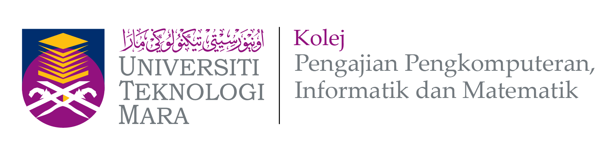

E-RESUME

Victoria Puyang Alexander
Victoria Puyang Alexander
Diploma in Office Management and Technology
Universiti Teknologi Mara (UiTM) Samarahan, Kuching , Sarawak
Graduation Date: September/2023
Relevant coursework: Office Management,Office Procedures,Office Automation,Malay Languange for Office Management,Document Processing, Executive Note-Taking,Records Management for Office Professionals, and Office software Applications.
Bachelor Degree in Science Information (Hons) of Records Management
Universiti Teknologi Mara (UiTM) Kampus Puncak Perdana, Shah Alam, Selangor
Graduation Date: September/2026
Course highlights: Records management, Appraisal and Disposal, Preservation and Conservation.